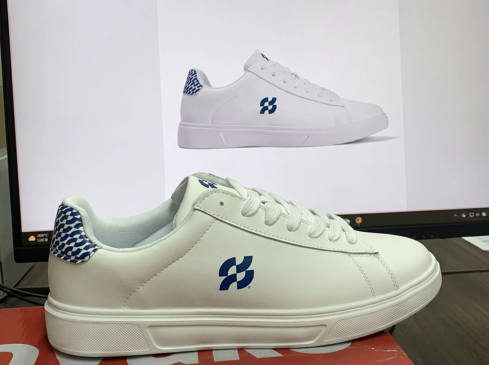
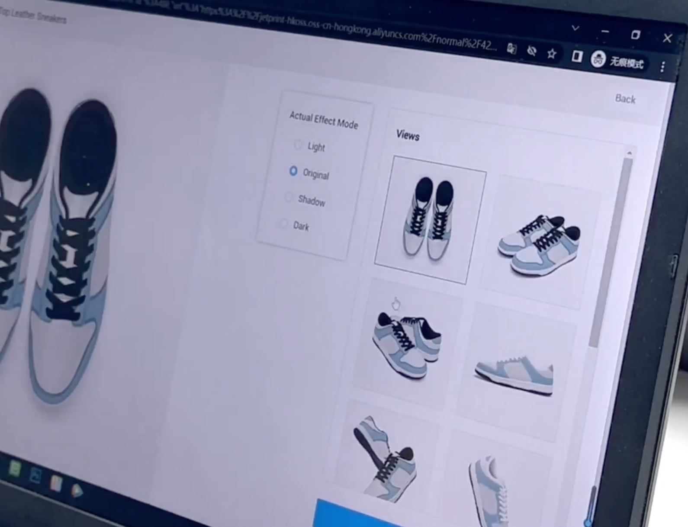
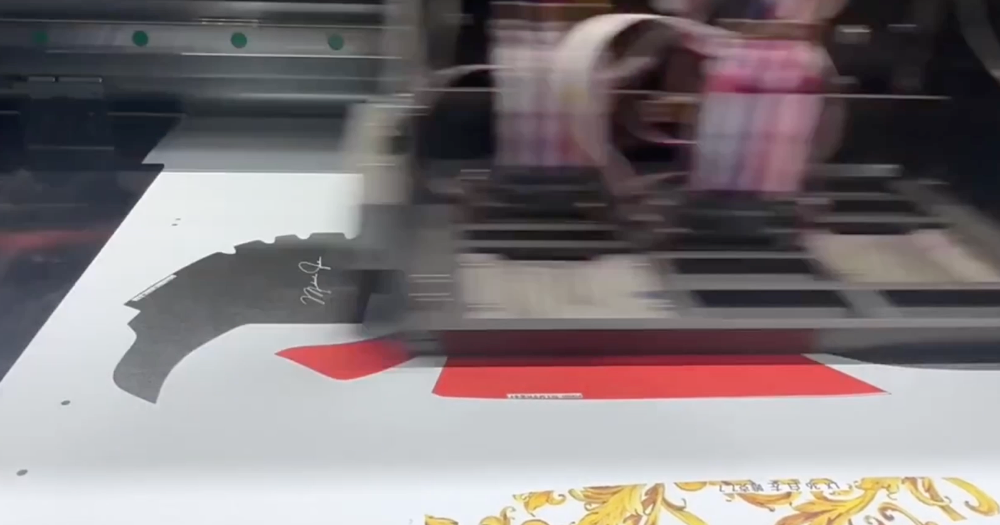
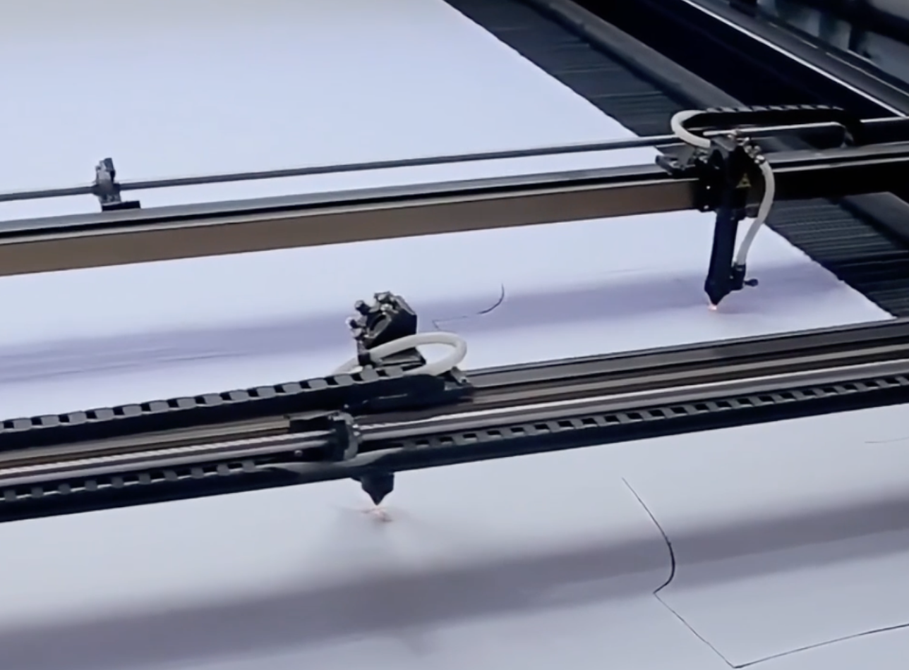
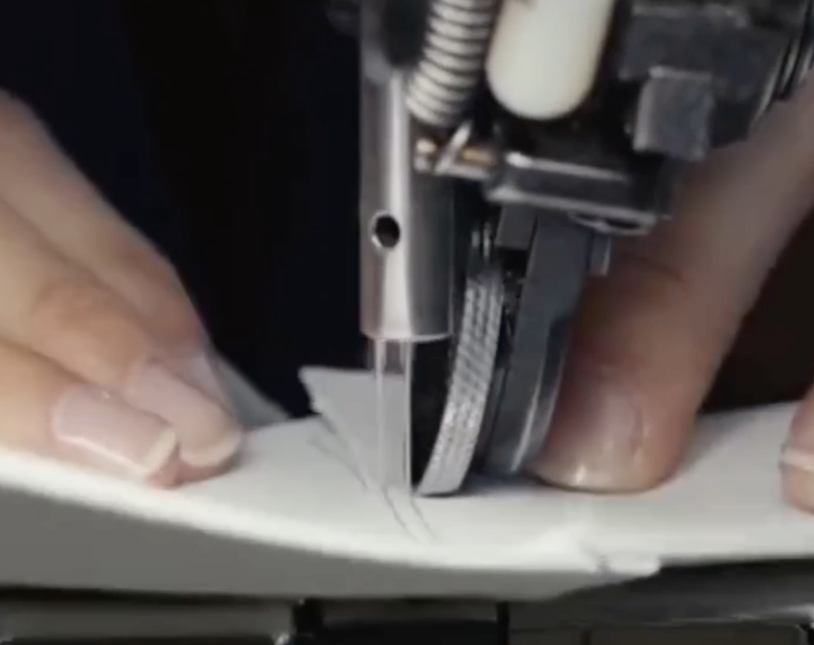
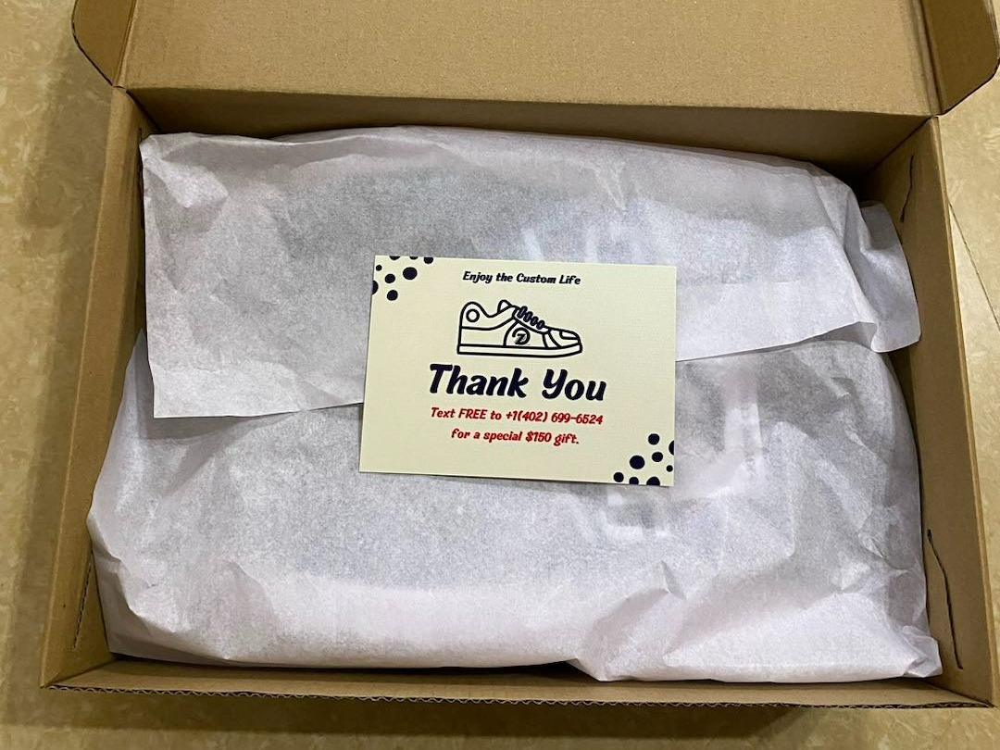
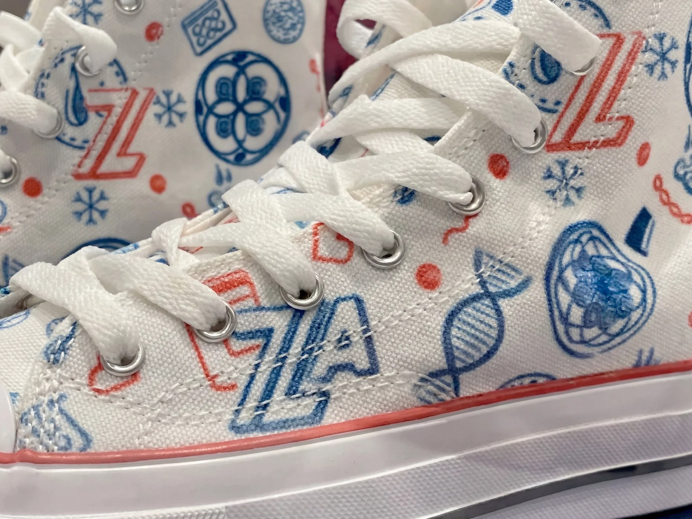
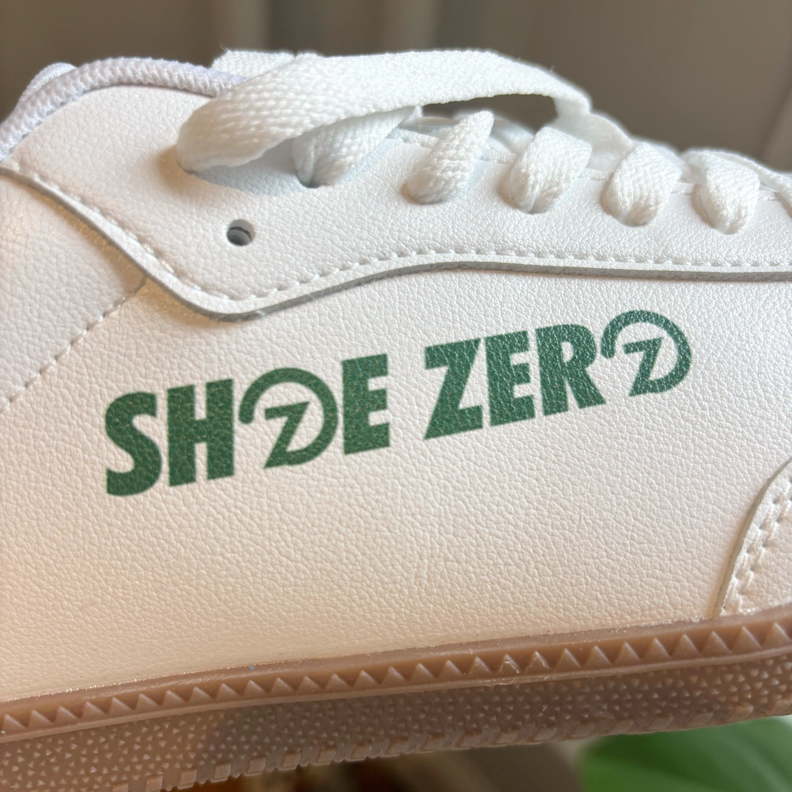
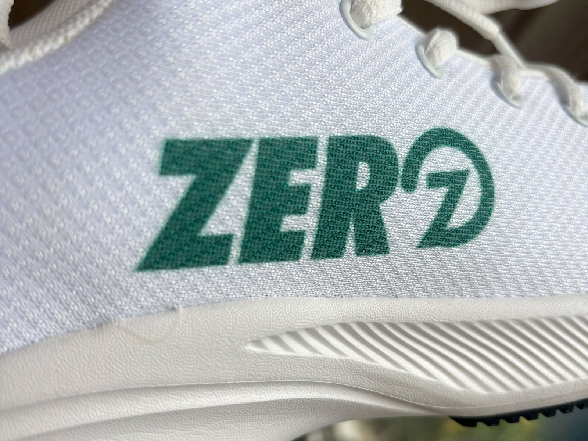

How Shoe Zero Makes Your Shoes
Direct-to-garment printing on canvas, synthetic leather, and mesh, then laser-cut into shoe panels. Every pair runs through seven hand-checked steps before it ships.
- Production tech
- DTG (direct-to-garment)
- Daily capacity
- Up to 500 pairs
- Production window
- 2 to 3 weeks
- Pairs delivered
- 120,000+

The DTG printing process, in seven steps
Every pair runs through the same seven steps. We print to order, not from stock.
We receive your design
Your design starts on our customizer where you preview it on your chosen shoe model before placing the order. We accept PNG, JPG, and SVG files.
Our team reviews each file before production begins. The review confirms the resolution holds up at print size, the design lays out cleanly within the printable area of each panel, the color mode is RGB (which DTG processes natively), and there are no fine elements that would soften during the print pass. If the file has issues that could affect print quality, we flag them so the design can be adjusted before production starts.

Every panel gets printed
The material is direct-to-garment printed before the panels are cut. The process starts with pre-treatment, where a water-based polymer solution is applied to the material so the white ink bonds properly into the fibers. The pre-treatment chemistry is formulated per substrate. Canvas uses a cotton-grade formulation, mesh uses a synthetic-grade formulation with higher viscosity, and synthetic leather uses a formulation tuned for its non-porous surface. Without the right pre-treatment for each material, colors would dull on dark substrates and the print would fade over time.
Our DTG printers then lay water-based ink directly into the material. On dark substrates, the white ink prints first as an underbase, then the CMYK colors (cyan, magenta, yellow, black) layer on top so they stay vibrant instead of being absorbed by the dark fabric. Printing on flat panels, instead of an already-assembled shoe, gives sharper detail, cleaner edges, and consistent coverage across every printable surface.

We laser-cut the panels
Once the print is laid, the panels are cut out of the material with a CO2 laser. The laser wavelength is absorbed cleanly by canvas, synthetic leather, and mesh, which gives sharper edges than die-cutting or rotary blades. Cutting after printing lets the laser track the printed design's panel borders precisely, so the registration between print and cut edge stays exact. Laser cutting also seals the edge during the cut, so canvas and mesh don't fray during assembly.
Cutting precision matters at this stage because every panel has to align cleanly during later assembly. A cut that drifts even a few millimeters from the pattern can leave the design misaligned when the panels are stitched into the shoe.

The print is heat-cured
After cutting, every panel runs through a full heat cure. The temperature cycle fully bonds the ink into the material's fibers. This is what separates DTG printing from surface paint. The ink can't peel off because it's inside the substrate, not on top of it.
Cure temperature and dwell time are adjusted per substrate. Canvas cures hottest because cotton fibers handle higher heat. Synthetic leather cures at a lower temperature to protect its surface coating from heat damage, warping, or surface distortion. Mesh cures lowest to prevent polyester fibers from warping or melting.
The shoe is sewn together
Once panels are cured, they're stitched into a finished shoe. The original shoe pattern guides the assembly. Outer panels go first, then tongue, then toe box. Each shoe is assembled by hand on industrial sewing machines, panel by panel. The finished upper is bonded to the sole with industrial adhesive. This process is called cemented construction, and heat sets the bond permanently.

A protective topcoat is applied
After assembly, every shoe gets a clear protective topcoat. The coating is a water-based polyurethane-acrylic hybrid. Polyurethane is the key component because it provides the flex resistance and abrasion durability that shoes need. The acrylic adds clarity to the finish. UV inhibitors, water-repellent compounds, and plasticizers complete the formulation, keeping the coating flexible as the shoe bends.
Once applied, the shoe runs through a second cure cycle to set the topcoat permanently into the surface.
Final QC, lace, and ship
Every pair passes through a manual quality check before it leaves. Our team looks for print misalignment, color drift, stitching defects, and topcoat irregularities. Pairs that don't meet standard go back through production.
Shoes that pass are laced, packed, and shipped to your address.

The materials we print on
Each shoe model uses a specific substrate. DTG printing behaves differently on each one.

Canvas (substrate 1 of 3)
Canvas is a tightly-woven cotton or cotton-blend material. Of the substrates we print on, canvas takes ink most deeply. The open weave allows pigment to absorb into the fibers without sitting on the surface, which gives canvas the strongest color saturation of any substrate we work with.
Because canvas absorbs ink so readily, dark canvas needs the heaviest pre-treatment before printing. Without it, the fabric pulls the white underbase too deep into the fibers and color saturation drops. There's a trade-off here. Canvas's absorbency softens fine line detail slightly at the edges. Bold artwork and photographic prints land sharpest. Very thin lettering or fine line work is the one thing canvas pushes back on. We compensate by tuning the pre-treatment dwell time so the fabric is fully prepped before printing, which reduces how much the ink wicks into the weave during the print pass.
- Best for
- Photos, gradients, bold artwork
- Color depth
- Highest
- Pre-treatment
- Heavy (deep absorbency)
- Watch for
- Softens fine line detail
- Models
- Zero Canvas, Classic Zero

Synthetic leather (substrate 2 of 3)
The synthetic leather we print on is a polyurethane (PU) coating bonded to a fabric backing. The PU surface behaves opposite to canvas under DTG ink. It's non-porous compared to woven fabric, so ink sits on top of the surface during the print pass rather than absorbing into fibers. Heat curing bonds the ink to the PU layer, and the protective topcoat seals it under an additional protective coating.
Because the ink doesn't penetrate as deeply as it does on canvas, prints on synthetic leather reproduce edges sharper. Bold blocks, clean line art, and high-contrast logo work land with the crispest definition here. Photographic depth is moderate compared to canvas because the ink can't layer as far into the substrate, but color accuracy is excellent on flat artwork. Synthetic leather also gives more uniform print results than real leather because the PU surface is consistent across the substrate.
- Best for
- Logos, bold blocks, line art
- Color depth
- Medium-high
- Pre-treatment
- Light (PU surface-bond)
- Watch for
- Reduced depth on photos
- Models
- Core Zero, Zero Runner

Mesh (substrate 3 of 3)
Athletic shoes use mesh for breathability. Mesh is the most difficult substrate to print on because its structure is open by design. Without enough white underbase, color ink falls through the weave gaps instead of resting on the mesh fibers, which prints colors dull and uneven.
To compensate, mesh gets the heaviest white underbase of any substrate we work with. The white acts as a backing layer that color ink can grip. Solid colors and simple line work reproduce well after this step. Fine photographic detail still loses some sharpness because the open weave breaks up continuous tone. Anything with fade gradients or fine pixel detail will read softer on mesh than on the other substrates.
- Best for
- Solid colors, simple lines
- Color depth
- Medium
- Pre-treatment
- Heaviest white underbase
- Watch for
- Photos lose sharpness
- Models
- Zero Runner, athletic builds
What we check in our shoe manufacturing process
Every pair gets reviewed by hand. Here are the seven checks each shoe goes through.
Print alignment
Confirms artwork sits exactly where the customer placed it on the design tool.
Color accuracy
Compares printed color against the source file's RGB values.
Ink cure
Verifies the ink has fully cured and does not smudge or transfer.
Edge precision
Checks the print edges are sharp without bleed or smudge.
Stitching integrity
Inspects the seams for missed stitches or weak points.
Topcoat coverage
Confirms the protective coating is applied evenly across all printed panels.
Pair match
Verifies left and right shoes match in print, color, finish, and assembly.
Production details, expanded
For the readers who want to drill in.
Direct-to-garment printing is a process that uses an industrial inkjet printer to apply ink directly into a material's fibers, rather than onto a surface coating. The ink bonds with the substrate during heat curing. The full DTG printing process at Shoe Zero runs through seven steps: pre-treat, print, cut, cure, assemble, seal, and inspect.
Printing on flat material lets the print head reach every panel area without geometric obstruction. Color saturation, edge sharpness, and coverage all stay consistent across the print because the surface stays flat under the print head. Laser-cutting after printing then lets the cut track the printed design's panel borders precisely, which keeps the registration between print and cut edge exact.
We use the CMYK printing process (cyan, magenta, yellow, black) plus a white base layer. The white goes down first, then the colors print on top. This keeps colors vibrant on dark substrates instead of being absorbed by the dark fabric.
The topcoat is a clear water-based polyurethane-acrylic hybrid coating applied after assembly. Polyurethane is the key chemistry for shoes because it stays flexible as the shoe bends and resists the abrasion of daily wear. The acrylic component adds clarity and balances cost. UV inhibitors, water-repellent additives, and plasticizers complete the formulation.
Under normal wear, DTG-printed shoes hold their print indefinitely. The ink is bonded into the material's fibers, so it does not peel like surface paint. The protective topcoat adds another layer of resistance against fade, scratches, and water damage.
Each pair is printed, cut, cured, sewn, sealed, and inspected to order. Every order is unique to the buyer's design, so production starts when the order comes in. The 2 to 3 week production window reflects the actual hand-time each pair receives across these seven steps.
We print on the shoe models in our catalog. Each model has been tested for ink bonding, panel coverage, and print quality. We do not currently print on customer-supplied shoes.